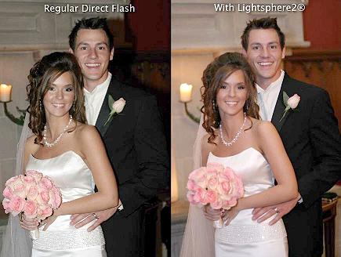

閃光燈是瞬間光源，不會受到氣候的影響，無論晴天、陰天、雨天...，就像太陽一樣，即使在陰天，透過打光的技巧，甚至可以模擬出晴天時陽光的感覺。 一般的外部閃光燈，在於由於易攜、出力的考量，能視為「點光源」，瞬間(強力)發光、原始光質較硬。 如何將輸出「點光源」變成「面光源」？如何控制適當的出力？還有如何將光線均勻的補到適當的區域？都是一門學問。 它也不像反光打出來的光那麼的直覺！它是瞬間擊發的，對於新手而言，光還沒打出時，不會知道結果的樣貌！ 閃光燈的應用上，會衍生非常多的「柔光策略」，即使是進階的老手，也不斷在可攜性還有柔光效果間取得新的平衡點。 我們也可以為了效果，攜帶棚閃、大型無影罩外出作業，柔光效果、打光策略固然可以更彈性化，但是器材的笨重及龐大，但這跟攜帶小型的閃光燈(如 Di866, 580EXII, SB-900)的方便性，顯然差距太大了。
許多人不想使用他們的相機的閃光燈，因為照片出來的人，感覺像修圖上去的。告訴你如何避免與一個簡單的flash擴散器常見的閃光問題。
為什麼我要這麼做？ 有很多情況下，使用相機的閃光燈是一個漆黑的或嚴重曝光不足的場所，可以看一下使用前後的差異。在這方面，相機閃光燈被大多數人視為必要之惡。
白色半透明傘作為一種廉價而有效的方式來傳播出的光，將覆蓋約一個1.4公尺的區域。 通過雨傘拍攝的，在我們看來，燈光修飾的開始閃光攝影的最佳類型。可以創造非常柔和的光線，它們價格便宜，而且他們有一個足夠寬的照明模式，並容易架設。 使用這種類型的傘要記住的是翻下小上閃光擴散到閃光燈頭使光線分佈在傘的整體大小。
光由反光傘創造了廣泛有模式的光源，是很好的光源組合，雖然拍攝人像、大頭照較少應用，因為陰影很難控制。 不像透光傘是放置在閃光燈和modle中間，銀色反光傘是將閃光的光反射回model上面。 銀傘可以應用在拍攝家庭聚會和團體，相機兩側置一個反光傘即使較大的群體，這種設置產生簡單的照明。
適當的反光板打法，打出來的光通常特色是柔美而自然，大太陽下時，反光板反射的光線則可能顯得剛硬而刺眼。 相較於小型閃光燈而言，反光板是一個大面積的光源(小型閃光燈可以視為一個點光源)，且具有反射後較柔的特點。 所以，反光板的運用在人像攝影領域是應用相當廣泛的，它的光質好、補光面積大，而且在人像的眼中會形成漂亮的眼神光。 晴天時，有光線可以補，陰天時，不一定可以補出光線(也可能要靠近模特兒很近)。